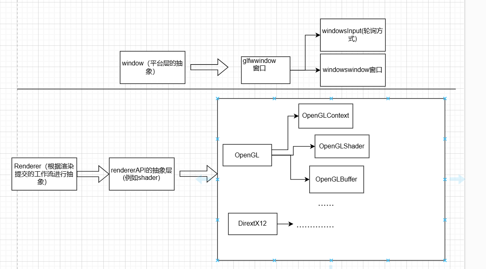
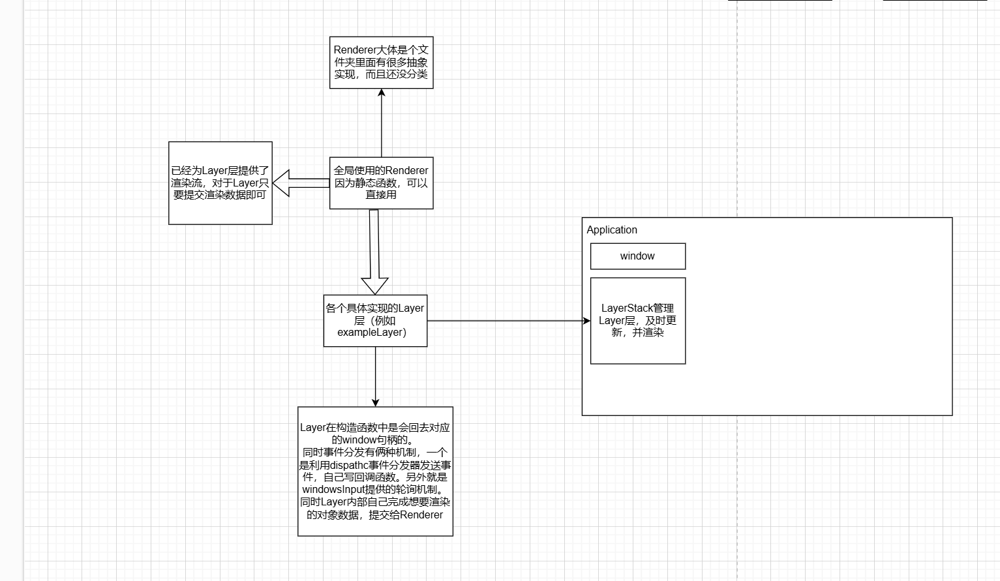

笔记17
渲染上下文
前面的设计中我们也提过，我们要一步一步抽象出来，摆脱对平台和渲染API的依赖，所以这一集就抽象出了OpenGL的context（上下文），主要功能是在使用 GLFW 创建的窗口中初始化 OpenGL 并进行渲染。
目前默认都是使用glfw来管理窗口和状态，所以不做抽象分离。
为了应对后面多种接口，我们首先需要抽象出graphicscontext图形上下文。
目前就主要实现俩个功能
- 初始化对应的渲染框架
- 加载函数指针，创建上下文
- 交换渲染缓冲区
- 现在主要都是双重缓冲和三缓冲渲染，所以需要频繁交换。
class GraphicsContext
{
public:
virtual void Init() = 0;
virtual void SwapBuffers() = 0;
};
我们可以看OpenGL具体的实现方式
//OpenGLContext.h
struct GLFWwindow; //不用在意这个，这个只是为了头文件使用到gl3w.h定义的类而声明的，具体实现在cpp里链接。
namespace Hazel
{
class OpenGLContext :public GraphicsContext
{
public:
OpenGLContext(GLFWwindow* windowHandle);
virtual void Init() override;
virtual void SwapBuffers() override;
private:
GLFWwindow* m_WindowHandle;
};
}
//OpenGLContext.cpp
OpenGLContext::OpenGLContext(GLFWwindow* windowHandle)
:m_WindowHandle(windowHandle)
{
HZ_CORE_ASSERT(windowHandle, "windowHandle is null");
}
void OpenGLContext::Init()
{
glfwMakeContextCurrent(m_WindowHandle);
int status = gladLoadGLLoader((GLADloadproc)glfwGetProcAddress);
HZ_CORE_ASSERT(status, "Failed to initialize Glad");
//这个是glad里面可以查看平台显卡等配置的函数没啥
HZ_CORE_INFO("Vendor :{}", reinterpret_cast<const char*>(glGetString(GL_VENDOR)));
HZ_CORE_INFO("Renderer :{}", reinterpret_cast<const char*>(glGetString(GL_RENDERER)));
HZ_CORE_INFO("Version :{}", reinterpret_cast<const char*>(glGetString(GL_VERSION)));
}
void OpenGLContext::SwapBuffers()
{
glfwSwapBuffers(m_WindowHandle);
}
主要默认都是使用glfw来管理窗口。主要就是接受
- 构造函数接受glfw的窗口句柄
- 初始化加载opengl函数，为其创建上下文
- 交换缓冲区
最后我们看一下在windowswindow.cpp中修改的步骤
- 最下方m_Context的创建和初始化
- 更新中的帧交换
最后我们暂且整理一下目前项目构成，大体是这么个思路。
 